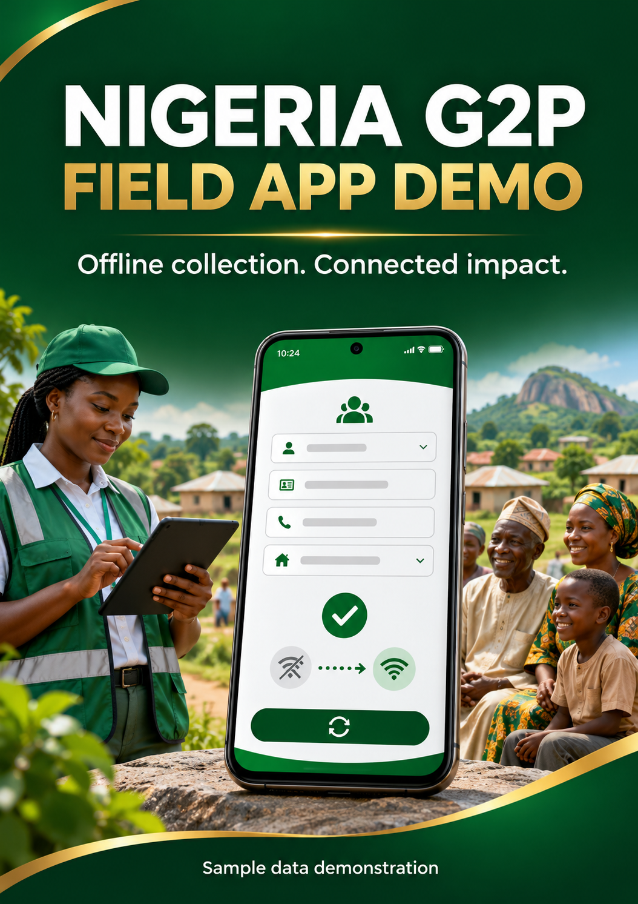

Android test APK and instructions
Preview only · Drafts stay in this browser. Supervisor identity checks and server sync are not connected. Do not enter real personal data.

Sample data only · Offline interaction preview
Android test APK and instructions